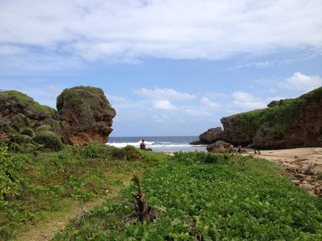

Island Saipan
Saipan /saɪˈpæn/ is the largest island of the Northern Mariana Islands, a commonwealth of the United States in the western Pacic Ocean. According to the 2010 United States Census, Saipan's population was 48,220.
The Commonwealth center of government is located in the village of Capital Hill on the island. As the entire island is organized as a single municipality, most publications term Saipan as the Commonwealth capital.
Saipan Tour
 Many choose the Micronesian volcanic island of Saipan to tour the famous Old-Man-by-the Sea, a naturally created giant face rock, and Grotto, an underwater limestone cavern plummeting seventy feet at its deepest point. The Grotto is home to city of sea life, including turtles, coral, and reef sharks. Land-lovers can find satisfaction in the Garapan Street market, a display of Saipan's unique food and craft tradition, or the World War II battlefields, a visual history of the Battle of Saipan
Hotels
There are many great hotels including five star class and little cozy hotels